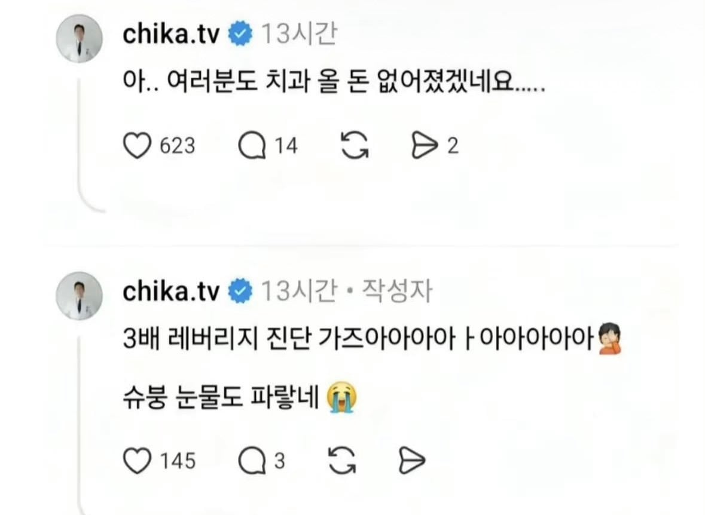

치과는 진짜 ㅋㅋㅋ
다른 과도 치료마다 물론편차가 잇겟지만 치과만큼
병원에따라 치료 범위랑 치료법이 달라지는건 없는듯.
미용병원은 애교수준
드립은 드립으로 받으면 안될까
Wwe가아니라 Ufc라구욧
드립이라고 누구나 모든 농담을 다 받아줄 수는 없는 거 아니겠어.
댓창났네
근데 wwe로 받기 힘들긴 하네
드립도 상황을 가려서 해야죠 여러분. 직업 특성상 저런 드립은 유머여도 안치는게 자기 이미지에 나은건 물론이고 같은 치과의사들 이미지까지 내려가잖아요
어우 드립치는거에 댓글 역하네 ㅋㅋㅋㅋ